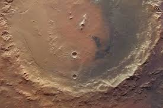

La geologia planetaria estudia la composicion, estructura y evolucion de las superficies y el interior de los cuerpos planetarios del sistema solar y mas alla. Integra metodos de geofisica, mineralogia y analisis espectral remoto.
Los procesos internos incluyen tectonica, vulcanismo y diferenciacion planetaria. La presencia de calor interno, ya sea por desintegracion radiactiva o por energia residual de formacion, determina la actividad geologica de un cuerpo.
La tectonica de placas, caracteristica de la Tierra, no se ha confirmado de forma definitiva en otros planetas, aunque existen indicios de actividad tectonica en cuerpos como Venus.
El vulcanismo ha sido observado en Marte y en lunas como Io. La existencia de volcanes en escudo gigantes sugiere dinamica interna prolongada en el tiempo.
Incluyen impactos meteoriticos, erosion por viento o liquidos y procesos criovolcanicos en lunas heladas. Estos procesos modelan la superficie y permiten estimar edades relativas mediante conteo de crateres.
La presencia y composicion de una atmosfera influyen de manera critica en la evolucion superficial. Procesos como efecto invernadero, perdida atmosferica por escape hidrodinamico y erosion por viento solar modifican la historia geologica.
Sondas orbitales y rovers han permitido obtener datos in situ sobre composicion mineralogica, estratigrafia y condiciones pasadas de habitabilidad. El analisis espectroscopico es una herramienta clave para inferir composicion sin contacto directo.
El enfoque comparativo entre la Tierra, Marte, Venus y lunas como Europa permite identificar patrones evolutivos y comprender mejor los factores que determinan la habitabilidad y estabilidad geologica a largo plazo.